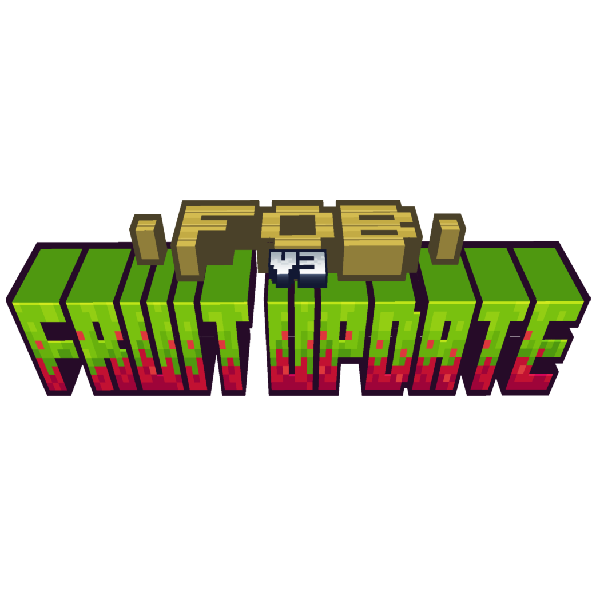
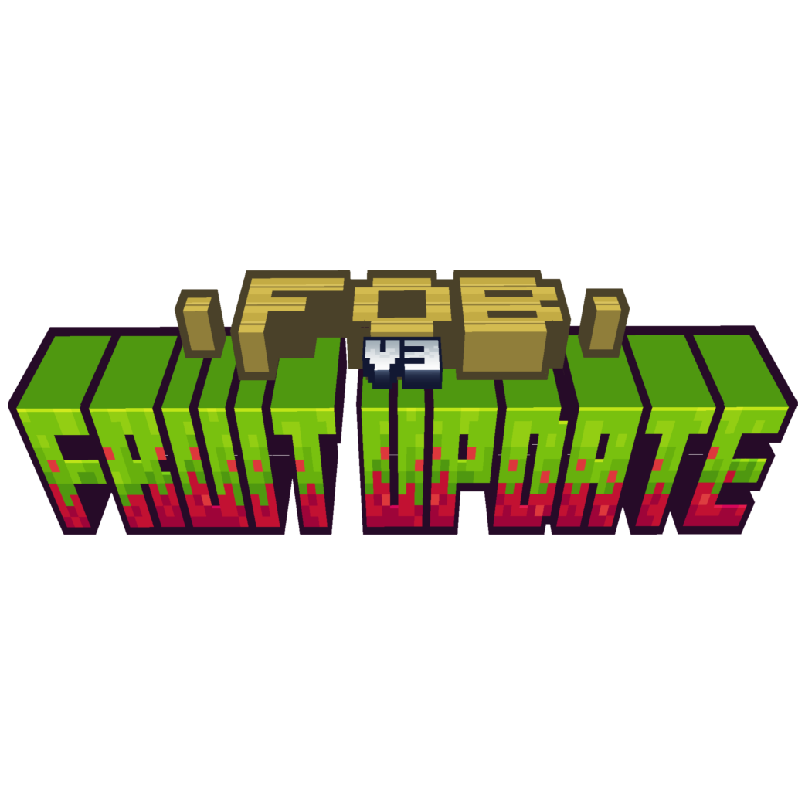
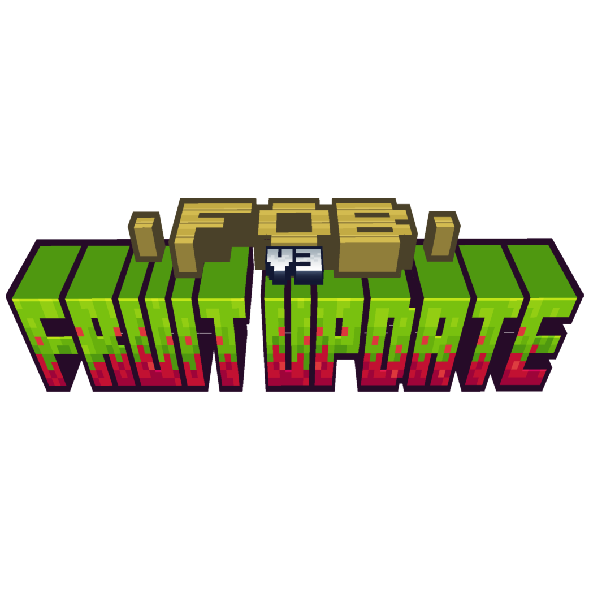
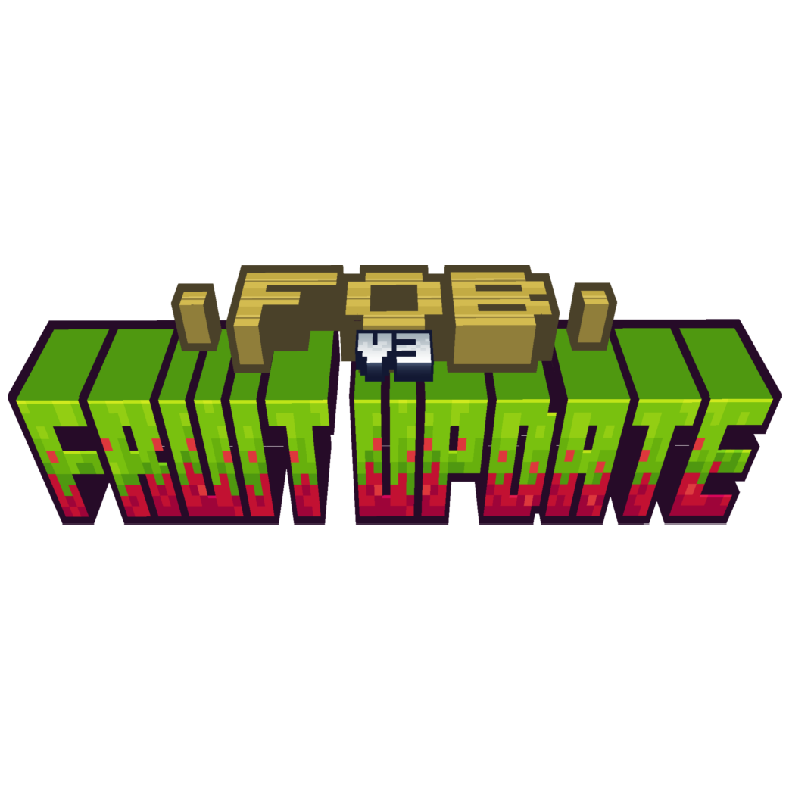
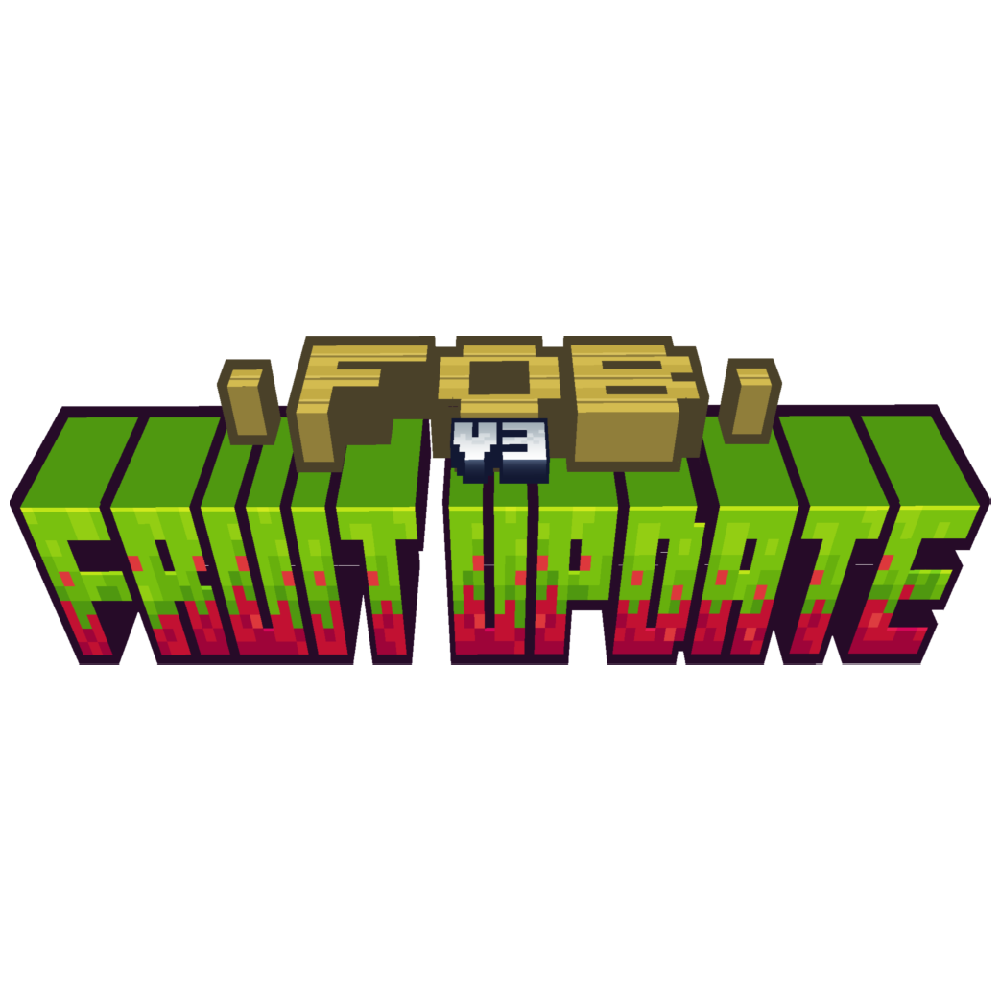

Accueil
Anciennes Versions
FOB Reborn
Ancien FOB Web Site
FLCorporation
Les anciennes Versions

Installer FOB
FOB (Curseforge)
Alphas de FOB Reborn (Curseforge)
Alphas de FOB Reborn (Github)

 



 
